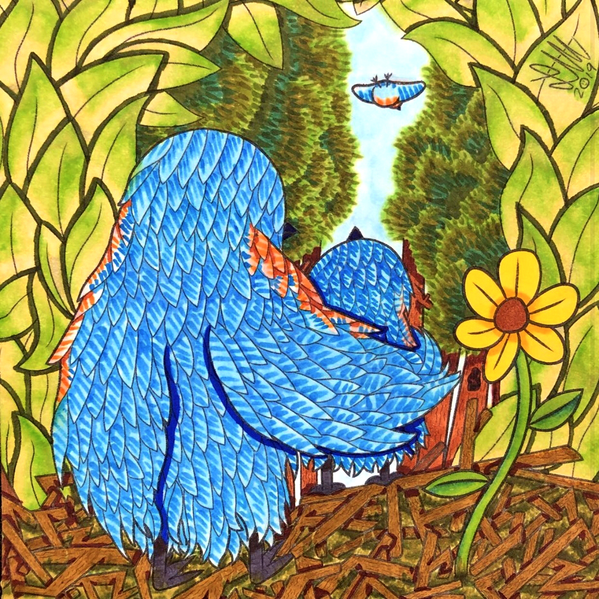
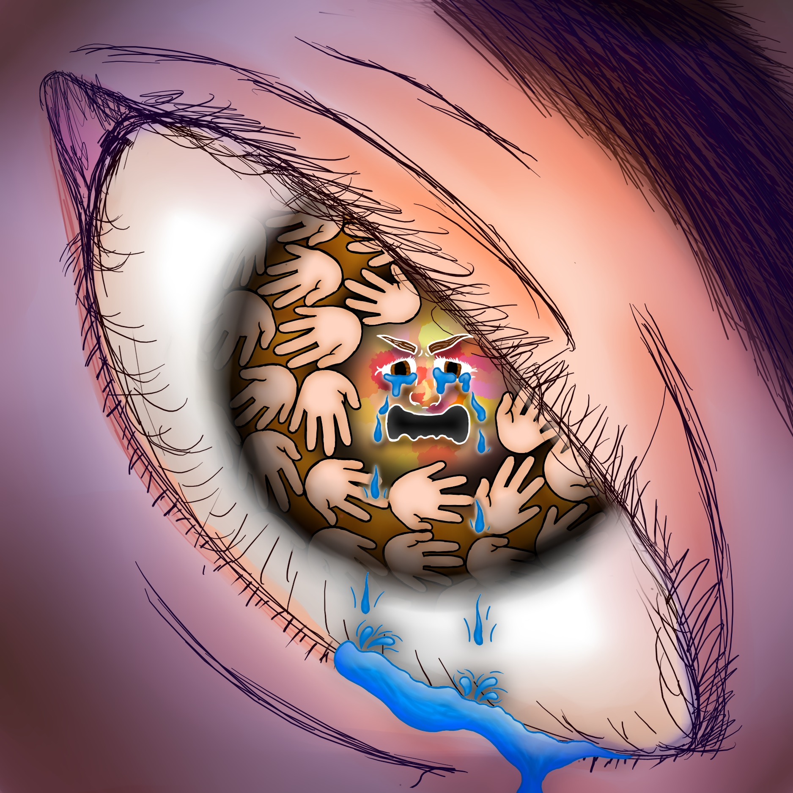
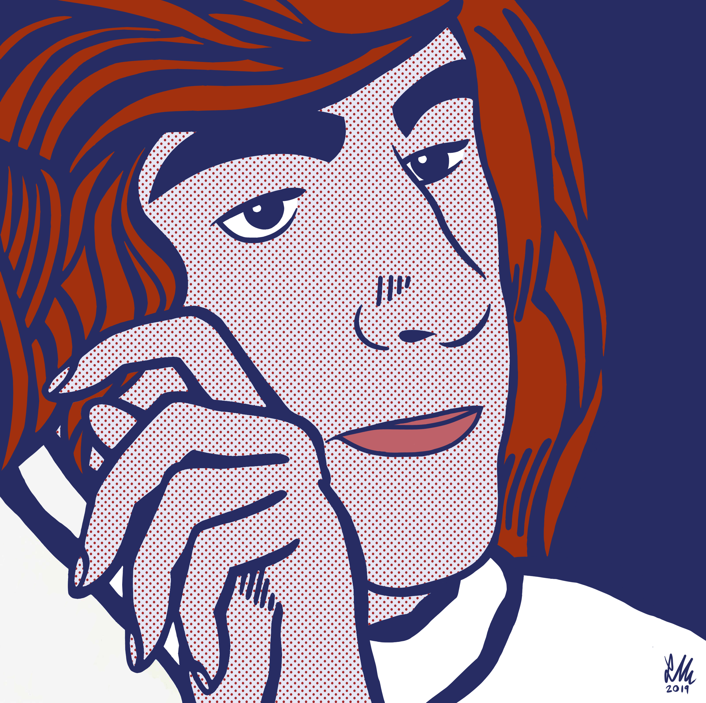
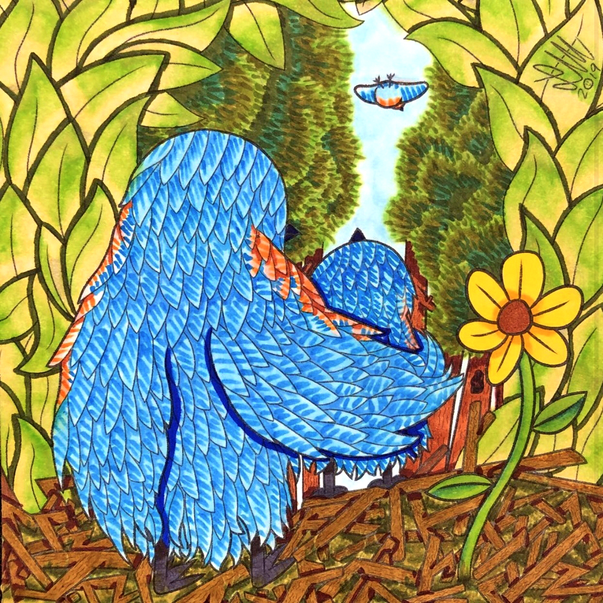
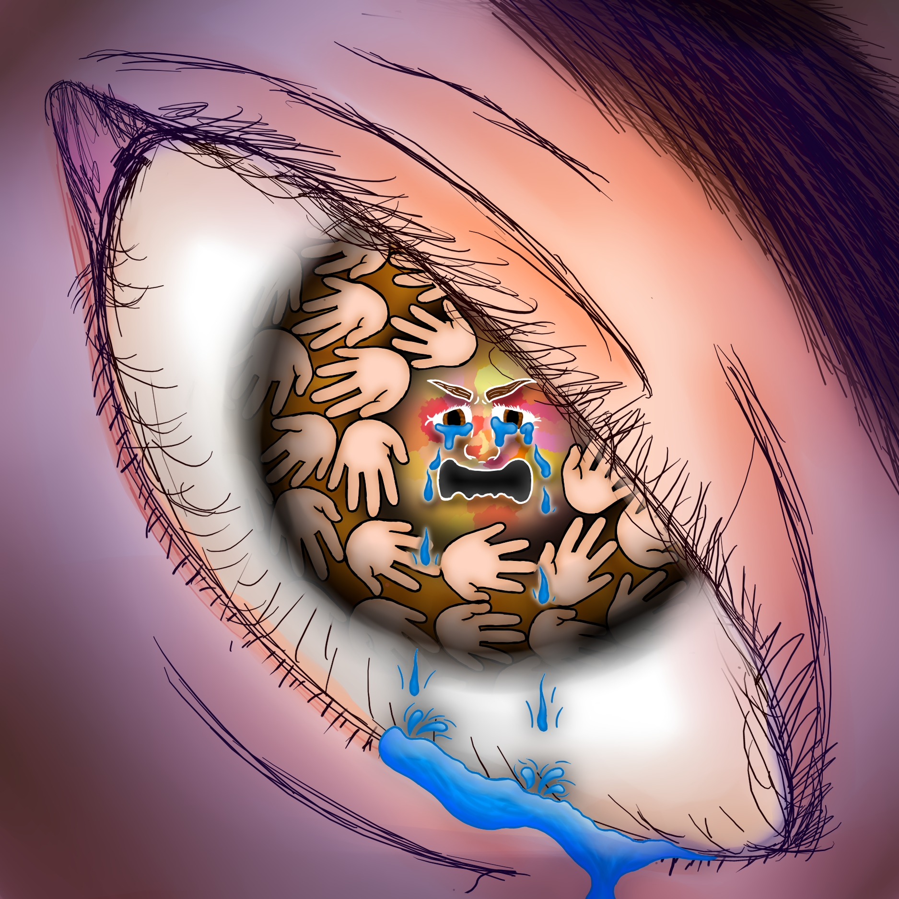
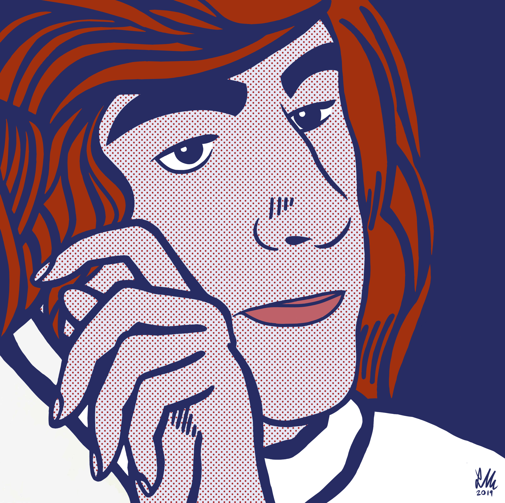

This was my first attempt at recreating the style of Keith Haring, my favorite artist in the contemporary period and one of my biggest inspirations in general. ----------------------------->
<------------------ This piece is inspired by the song "Things That Make It Warm" by Cavetown, and was featured for a time in the Heckscher Museum of Art.



This was my first attempt at recreating the style of Keith Haring, my favorite artist in the contemporary period and one of my biggest inspirations in general. ----------------------------->
<------------------ This piece is inspired by the song "Things That Make It Warm" by Cavetown, and was featured for a time in the Heckscher Museum of Art.
Hold left-click on anything in the gallery to enlarge!
LUKE
MAVRO-
UDAKIS
My name is Luke, and I'm an artist.
My creative journey started in middle school (specifically Mothers' Day 2016, I'm still not sure why), when I decided that I wanted to commit myself to learning what it took to express myself on a visual platform. I found an unbelievable amount of freedom in art, and over the years took that in strides. I found that same joy later in music, storytelling, and have just started to in the Game Design process, but I always come back to visual art as what I can use to best express the stuff I want to get out of my head.
There are so many more reasons
as to why I stuck with it, though. Besides all the good feelings about it, and how it lets me streamline the whole brain-to-paper process with REALLY complex feelings faster than anything else, it's given me a portal into the creative world, if that makes sense. Over the years I've been inspired by, collaborated with, and even just bounced ideas between more people like me (people that I very much look up to) than I really could have ever expected; even beyond my life in work with visual art and storytelling in years' past, I've been starting to experience that exact same kind of connection with others in the Game Design field, and that makes me more hopeful and inspired than ever. Other creatives push me to keep doing more; I struggle at times to stay motivated to create by my own devices, so they've taken me the distance, and I don't know where I'd be without that.
It's been great on it's own,
but if fate allows I would like to get something out of it all, as selfish as that might sound. Don't get me wrong, I don't need to be any sense of rich or famous (though I don't think anyone would mind?), I really just want to love my work, my career, for the rest of my life. No one wants to put in a life's worth of effort into something, and then realize that they don't feel it represents or even really fulfills them. With that feeling being something that's pushed me pretty damn far (even into the Game Design field itself), I've come to the conclusion that I really just require that I love what I do.
In simple terms,
I see Game Design as an enterance into a deeper creative field where I can work in to find my niche, what I hope to be a balance between expression through art—a hard thing for anybody to integrate into a career as most are aware—and the technical aspects, which I also fortunately have come to love. With confident knowledge in game development which only continues to grow by the day, as well as a creative, determined mindset, I aspire to make great things, whatever ideas whoever I'm working for might be. It's evident that I have worked much on my skills (I mean come on, I coded this website from scratch), and in the end I just aspire to use them in my work, whether in games or related entertainment media as soon as I possibly can; until I find my place, of course, my experience in the technical side of things alone will probably do in getting me by. But when someone comes around looking for a creative and artistic mind to mix all the techy stuff in with a little bit of something else, I'll be ready.
My name is Luke, and I'm an artist.
My creative journey started in middle school (specifically Mothers' Day 2016, I'm still not sure why), when I decided that I wanted to commit myself to learning what it took to express myself on a visual platform. I found an unbelievable amount of freedom in art, and over the years took that in strides. I found that same joy later in music, storytelling, and have just started to in the Game Design process, but I always come back to visual art as what I can use to best express the stuff I want to get out of my head.
There are so many more reasons
as to why I stuck with it, though. Besides all the good feelings about it, and how it lets me streamline the whole brain-to-paper process with REALLY complex feelings faster than anything else, it's given me a portal into the creative world, if that makes sense. Over the years I've been inspired by, collaborated with, and even just bounced ideas between more people like me (people that I very much look up to) than I really could have ever expected; even beyond my life in work with visual art and storytelling in years' past, I've been starting to experience that exact same kind of connection with others in the Game Design field, and that makes me more hopeful and inspired than ever. Other creatives push me to keep doing more; I struggle at times to stay motivated to create by my own devices, so they've taken me the distance, and I don't know where I'd be without that.
It's been great on it's own,
but if fate allows I would like to get something out of it all, as selfish as that might sound. Don't get me wrong, I don't need to be any sense of rich or famous (though I don't think anyone would mind?), I really just want to love my work, my career, for the rest of my life. No one wants to put in a life's worth of effort into something, and then realize that they don't feel it represents or even really fulfills them. With that feeling being something that's pushed me pretty damn far (even into the Game Design field itself), I've come to the conclusion that I really just require that I love what I do.
In simple terms,
I see Game Design as an enterance into a deeper creative field where I can work in to find my niche, what I hope to be a balance between expression through art—a hard thing for anybody to integrate into a career as most are aware—and the technical aspects, which I also fortunately have come to love. With confident knowledge in game development which only continues to grow by the day, as well as a creative, determined mindset, I aspire to make great things, whatever ideas whoever I'm working for might be. It's evident that I have worked much on my skills (I mean come on, I coded this website from scratch), and in the end I just aspire to use them in my work, whether in games or related entertainment media as soon as I possibly can; until I find my place, of course, my experience in the technical side of things alone will probably do in getting me by. But when someone comes around looking for a creative and artistic mind to mix all the techy stuff in with a little bit of something else, I'll be ready.